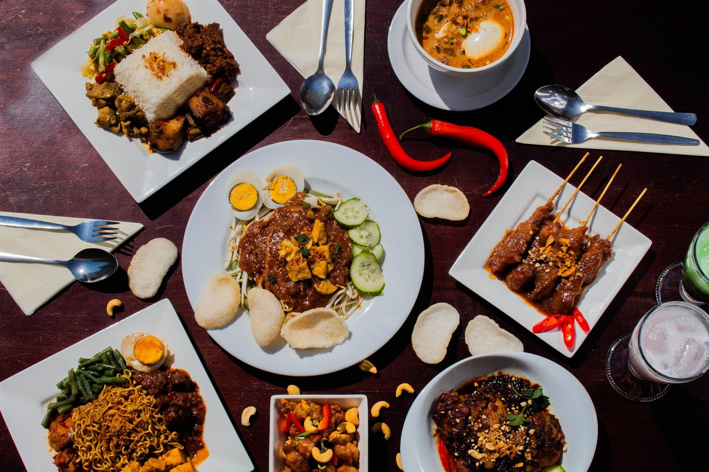
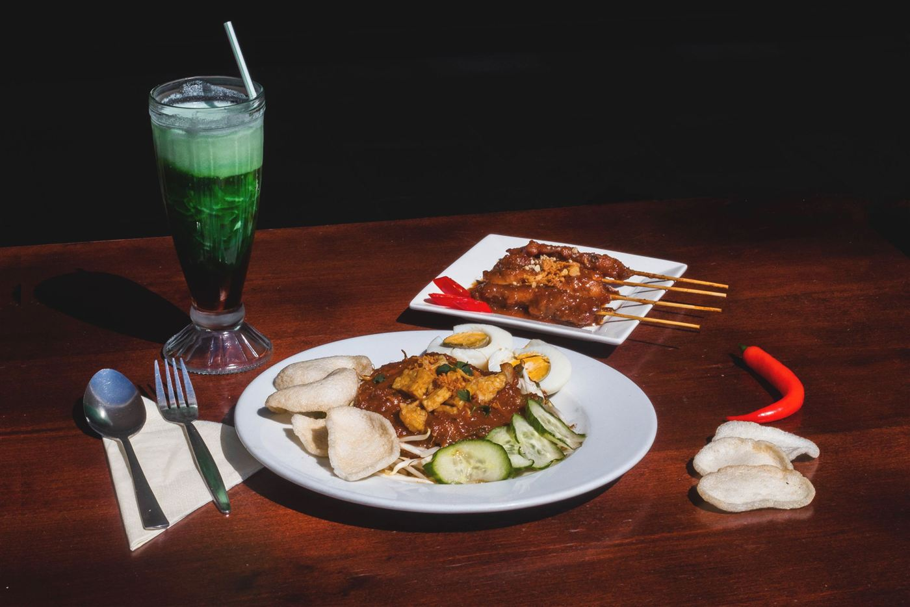
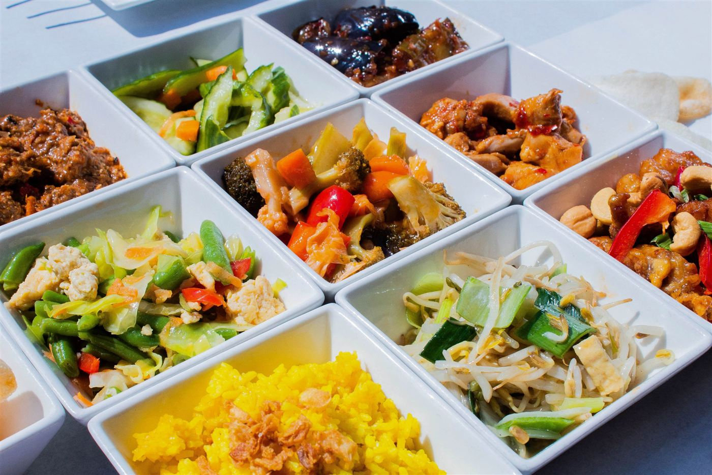
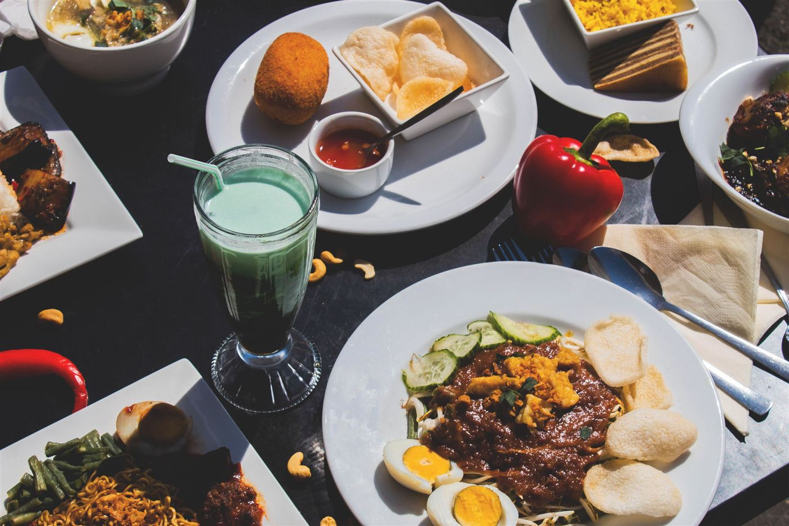

Eten bij ons
Reserveer online voor 1 tot 10 personen. Met meer gasten belt u even.
ReserverenMaandag 30 november gesloten. Dinsdag 1 december zijn we open volgens de openingstijden.

Indonesisch eethuis, afhaal en catering in Voorburg
Eet bij ons, haal af of laat bezorgen. Of stel zelf gerechten samen naar uw eigen smaak.
Toko Sari Manis is een Indonesische toko, restaurant, afhaal en cateringservice in het centrum van Voorburg. In onze keuken gebruiken wij verse én de beste kruiden volgens de traditionele Indonesische bereidingswijze.
U kunt bij ons eten, afhalen en gerechten naar uw eigen smaak samenstellen: een rames, een rijsttafel of een paar bakjes bij de rijst. Kip, rundvlees, vis, groenten en saté kiest u per ons of per portie.

Reserveer online voor 1 tot 10 personen. Met meer gasten belt u even.
ReserverenBel of stuur uw bestelling via WhatsApp en haal het op in Voorburg.
WhatsAppIn Voorburg, Leidschendam en een stukje Den Haag, tussen 17:00 en 20:00.
BezorginfoVier cateringmenu's, voor kleine en grote gezelschappen.
Cateringmenu'sVoor 2 personen. Een vegetarische rijsttafel is mogelijk bij de Sari Manis.

€ 42,50
Witte rijst, keuze uit 2 vlees, 3 groenten, 2 stokjes saté, gado gado, een half ei p.p. en krupuk.
€ 47,50
Basisgerecht naar keuze, keuze uit 3 vlees, 3 groenten, 2 loempia's, 2 stokjes saté, gado gado, een half ei p.p., atjar en krupuk.
€ 52,50
Basisgerecht naar keuze, keuze uit 2 vlees, 3 groenten, 2 loempia's, 2 stokjes saté, gado gado, vis, garnalen, een half ei p.p., atjar en krupuk.
Wij verzorgen catering voor kleine en grote gezelschappen. Neem contact op voor de diverse prijzen. Tijdens de kerstdagen hanteren wij aangepaste cateringprijzen.
Vanaf 15 personen
€ 16,00 p.p.
Vanaf 10 personen
€ 19,95 p.p.
Meest gekozen
Vanaf 10 personen
€ 25,95 p.p.
Vanaf 10 personen
€ 35,00 p.p.
De feestelijke decembermaand staat voor de deur. Wij verzorgen de catering gedurende de hele maand december, voor zowel kleine als grote gezelschappen. Wacht niet te lang met reserveren, want vol = vol!
Wij bezorgen tussen 17:00 en 20:00 uur in Voorburg, Leidschendam en een stukje Den Haag (Mariahoeve). De bezorgkosten zijn afhankelijk van de afstand, met een maximum van € 7,50. Woont u verder weg? Bel ons dan even.
U vindt ons ook op Thuisbezorgd.nl en Uber Eats. Bestelt u telefonisch of via WhatsApp, dan is het ongeveer 5 tot 10 procent goedkoper dan via die platforms.
Ayam pangang kecap bereiden wij vers voor u. Reken daarbij op een langere bezorgtijd.

Rond de feestdagen wijken onze tijden af.
Maandag 30 november gesloten. Dinsdag 1 december open volgens de openingstijden.
070 - 386 32 92 (ook WhatsApp)
info@sarimanis.nl
| Maandag | 16:00 - 21:00 |
|---|---|
| Dinsdag t/m zaterdag | 12:00 - 21:00 |
| Zondag | 16:00 - 21:00 |
| Feestdagen | 16:00 - 21:00 |